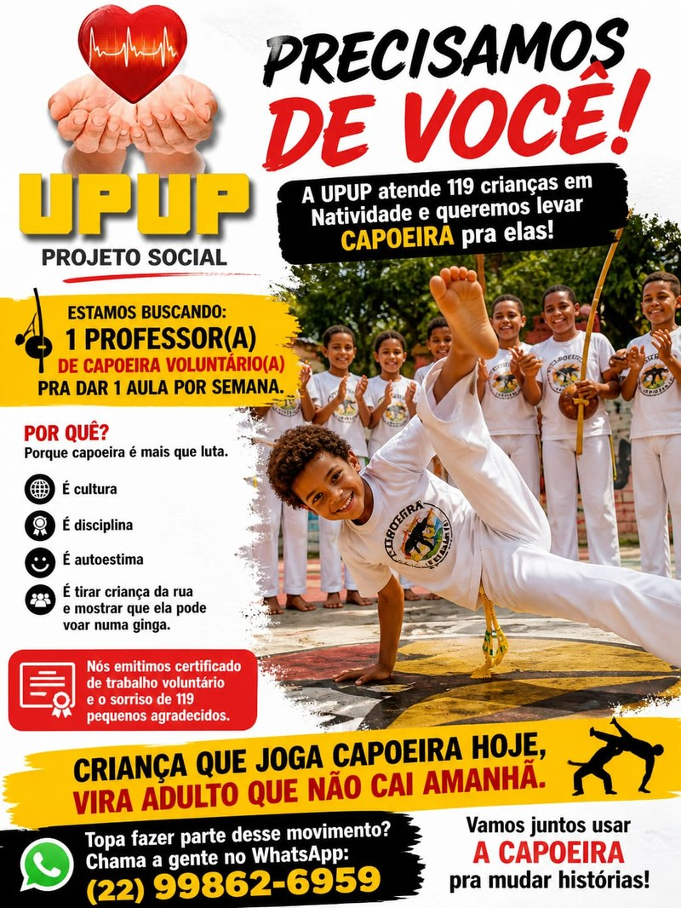

<div id="overlay">
    <div class="overlay-content overlay-content--flyer">
        <a class="overlay-link"
            href="https://wa.me/5522998626959?text=Ol%C3%A1%20UPUP!%20Tenho%20interesse%20em%20ser%20professor(a)%20de%20capoeira%20volunt%C3%A1rio(a)."
            target="_blank" rel="noopener"
            aria-label="Quero ser professor(a) de capoeira voluntário(a)">
            
        </a>
        <p class="overlay-hint">Clique em qualquer lugar para fechar</p>

        <!--
            === Conteúdo antigo (frase aleatória + logo) — DESATIVADO ===
            Mantido aqui para reativação futura. Pra voltar:
              1) Restaurar este bloco no lugar do flyer acima.
              2) Em js/overlay.js, descomentar o bloco "Mensagem aleatória".

        
        <p class="overlay-text">
            UPUP é mais que um projeto social: é uma família unida por um propósito —
            <strong>Amar e servir</strong>
        </p>
        -->
    </div>
</div>
